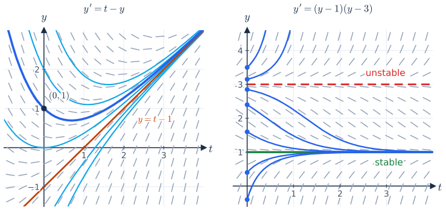
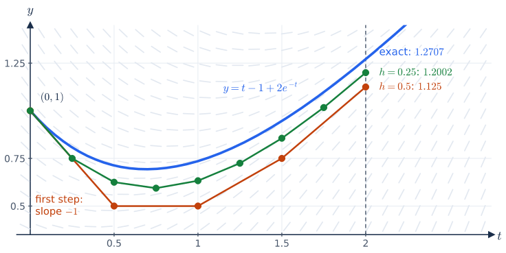
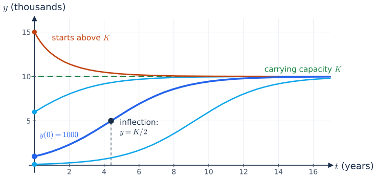
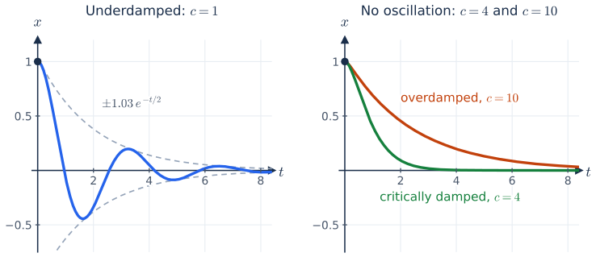

Write down the equations that describe growth, cooling, falling and mixing, and read their solutions from a picture before you solve anything. Then compute solutions step by step with Euler’s method, solve the main kinds of equation exactly, from separable and linear equations to the vibrations of a spring, and check every answer by substituting it back.
⏱ 270 minYou need: Modules 1 to 12, especially the rules of differentiation (Modules 4 to 6) and the techniques of integration (Modules 10 and 11)
In this module you will
Explain what a differential equation, its order and its solutions are, and check a solution by substituting it
Model growth, cooling, a falling body and a mixing tank with differential equations
Read direction fields, find equilibrium solutions and decide whether they are stable
Approximate solutions with Euler’s method, and explain why its error is proportional to the step size
Solve separable, logistic and first-order linear equations, and second-order linear equations with constant coefficients
Solve and check differential equations with SymPy, and numerically
1
What a differential equation is
Section 1.3 dropped a ball and gave the distance it falls in t seconds: s(t)=4.9t2 metres. Physics does not hand you that formula. What it gives is a statement about rates: near the Earth’s surface, if air resistance is negligible, a falling body has the constant acceleration g≈9.8 m/s². In symbols,
s′′(t)=9.8.
This is an equation for an unknown function, s, and it involves a derivative of s. Integrating twice (Module 10) gives s′(t)=9.8t+C1 and s(t)=4.9t2+C1t+C2. A ball dropped from rest has s(0)=0 and s′(0)=0, so C2=0 and C1=0:s(t)=4.9t2, the formula of Module 1.
Module 6 met another such equation, y′=ky, the law of exponential growth and decay, and checked that y=Cekt satisfies it. Most laws of science are statements about rates of change: Newton’s laws of motion, the laws of cooling and of radioactive decay, the laws of electric circuits. Their natural form is an equation like these two, and this module is about finding the functions they describe.
Definition 13.1Differential equation
A differential equation is an equation that involves an unknown function and one or more of its derivatives. Its order is the order of the highest derivative in it.
So y′=ky and y′=t−y have order 1, and s′′=9.8 and mx′′+cx′+kx=0 (a vibrating spring, Section 13.8) have order 2. In this module the unknown is a function of one variable, usually time t; such equations are called ordinary differential equations. Equations for functions of several variables, with partial derivatives (Module 17), are partial differential equations, and beyond this course. Following custom, the equations write y for y(t) and y′ for dy/dt:y′=t−y means y′(t)=t−y(t) for every t considered.
Definition 13.2Solution and initial value problem
A solution of a differential equation on an open interval I is a function that has the derivatives the equation involves at every point of I and makes the equation true for every t in I. A formula, with arbitrary constants, that gives every solution is the general solution; any one solution is a particular solution. An initial value problem asks for the solution that also satisfies initial conditions at a time t0:y(t0)=y0 for a first-order equation, and y(t0)=y0 and y′(t0)=v0 for a second-order one.
t0 and y0 are read “t nought” and “y nought”. To check that a function is a solution, substitute it: compute its derivatives, put everything into the equation, and see that the two sides agree for every t.
Example 13.1Checking a solution✓ Checked
Show that y=t−1+Ce−t is a solution of y′=t−y for every constant C, and find the solution with y(0)=1.
Differentiate: y′=1−Ce−t. The right side of the equation is
t−y=t−(t−1+Ce−t)=1−Ce−t.
The two sides agree for every t, so every function of the family is a solution on (−∞,∞). For the initial condition, y(0)=0−1+C=C−1, which is 1 when C=2. The solution is
y=t−1+2e−t.
Section 13.7 shows that the family contains every solution: it is the general solution.
Example 13.2A second-order equation✓ Checked
Show that x=cos3t and x=sin3t are solutions of x′′+9x=0, and find the solution with x(0)=2 and x′(0)=3.
For x=cos3t, the chain rule gives x′=−3sin3t and x′′=−9cos3t, so x′′+9x=−9cos3t+9cos3t=0. For x=sin3t,x′′=−9sin3t, and again x′′+9x=0. The same holds for x=C1cos3t+C2sin3t, whatever the constants C1 and C2: its second derivative is −9x. Now fit the two conditions. x(0)=C1, so C1=2. And
x′(t)=−3C1sin3t+3C2cos3t,
so x′(0)=3C2=3 and C2=1. The solution is x=2cos3t+sin3t. A second-order equation takes two conditions, and its solutions here have two constants; Section 13.8 shows that this is no accident.
Watch out
A solution must satisfy the equation at every t of an interval, not at a few points. The function y=t2 is not a solution of y′=2y: here y′=2t and 2y=2t2, which agree at t=0 and at t=1, but at t=2 they are 4 and 8.
When there is exactly one solution
In Example 13.1 exactly one function of the family has y(0)=1. For first-order equations written as y′=F(t,y), exactly one solution through a given point is the usual situation, and a theorem says when it is guaranteed. It needs one new piece of notation: Fy, read “F sub y”, denotes the derivative of F(t,y) with respect to y, with t held fixed as if it were a constant. For F(t,y)=t−y2,Fy=−2y. (This is a partial derivative, the subject of Module 17.)
Theorem 13.1Existence and uniqueness
Suppose that F and Fy are continuous on an open rectangle R, the set of points (t,y) with a<t<b and c<y<d, that contains the point (t0,y0). The ends a,b,c and d may be infinite, so R may be the whole plane. Then the initial value problem
y′=F(t,y),y(t0)=y0
has a solution on some open interval containing t0, and only one: two solutions of the problem whose graphs lie in R agree on every open interval containing t0 on which both are defined.
The proof, by a sequence of better and better approximations, belongs to a course on differential equations; this series uses the theorem without proof. Outside R it promises nothing, which is why the graphs must stay in R. Two examples show what it promises and what it does not.
The interval can be short.F(t,y)=y2 and Fy=2y are continuous everywhere, yet the solution of y′=y2,y(0)=1, is y=1−t1 (check: y′=(1−t)21=y2), which exists only for t<1: it blows up, growing without bound as t approaches 1. Nothing in the equation warns you.
Without the hypothesis on Fy, uniqueness can fail. The problem y′=3y2/3,y(0)=0, has two solutions, y=0 and y=t3: for y=t3,y′=3t2 and 3y2/3=3(t3)2/3=3t2 (with y2/3 the square of the real cube root). Here Fy=2y−1/3 is not defined at y=0.
Uniqueness has a picture. Where F and Fy are continuous, the graphs of two different solutions of y′=F(t,y) never cross or touch: at a common point both would solve the same initial value problem, and so they would be the same solution.
2
Models
Most differential equations in science come from one principle: a quantity changes at the rate at which it is created or flows in, minus the rate at which it is destroyed or flows out. Writing that sentence in symbols is modelling, and the equation is a model: a simplified description, good when its assumptions hold. Four models recur in this module. Their numbers are hypothetical, chosen so that the arithmetic stays clean.
Growth and decay. A population with plenty of food and space has births and deaths in proportion to its size, so it changes at a rate proportional to its size: y′=ky, where k, the birth rate minus the death rate per individual, is positive when births outnumber deaths. The constant k is measured per unit of time: with t in years, k=0.02 per year means that the population grows at 2% of its current size per year. In a radioactive sample, each atom has the same chance of decaying in each second, so the number decaying per second is proportional to the number left: y′=ky with k<0, now per second (Module 6).
Newton’s law of cooling. A hot drink cools quickly when it is much hotter than the room, and slowly as it approaches room temperature. Newton’s law of cooling makes the rate proportional to the difference: if T(t) is the temperature of an object in surroundings at a constant temperature Ts, then
dtdT=−k(T−Ts),
with a constant k>0 that depends on the object and its surroundings, measured per unit of time (per minute, say). The sign is right: when T>Ts the right side is negative and T falls; when T<Ts,T rises. Like every model, this one is an approximation; it ignores, for example, that the outside of a cup cools faster than the inside.
A falling body with air resistance. Take downwards as positive. A body of mass m falling at speed v feels its weight mg pulling down and air resistance pushing up. For small, slow bodies the resistance is roughly proportional to the speed, cv with a constant c>0 in kilograms per second (so that cv is a force in newtons), and Newton’s second law (mass times acceleration equals the total force) gives
mdtdv=mg−cv.
The speed stops changing when mg−cv=0, at the terminal velocityvT=mg/c. Suppose c/m=0.2 per second: dividing by m,v′=9.8−0.2v, and vT=49 m/s. For large, fast bodies such as a skydiver, a resistance proportional to v2 fits better (Exercise 13.11).
Mixing. A stirred tank with liquid flowing in and out:
Example 13.3A mixing tank✓ Checked
A tank holds 100 litres of salt water containing 5 kg of dissolved salt. Salt water with 0.2 kg of salt per litre flows in at 3 litres per minute; the tank is stirred so that it stays uniform, and the mixture flows out at the same rate. Write an initial value problem for the amount of salt, y(t) kg, after t minutes, and find the amount at which it would stop changing.
The volume stays at 100 litres, since 3 litres per minute flow in and 3 flow out. Salt flows in at 0.2×3=0.6 kg per minute. At time t the concentration in the tank is y/100 kg per litre, so salt flows out at 100y×3=0.03y kg per minute. Rate of change equals rate in minus rate out:
y′=0.6−0.03y,y(0)=5.
Every term is in kg per minute, as it should be. The amount stops changing when 0.6−0.03y=0, at y=20 kg; the tank then has the inflow’s concentration, 20/100=0.2 kg per litre. The constant function y=20 is a solution, an equilibrium (Section 13.3). Exercise 13.6 finds how y gets there.
Key idea
Rate of change = rate in − rate out. Before you solve a model, check that every term has the same units, and that the signs push the quantity the way it must move.
Watch out
A wrong sign gives a model that runs away. T′=k(T−Ts) with k>0 makes a hot cup of tea heat up further, faster and faster. Ask which way the quantity must move, and check that the equation agrees. And keep units consistent: with flows in litres per minute, t is in minutes, and a rate per hour must be converted first.
3
Direction fields and equilibria
You can draw the solutions of y′=F(t,y) before you solve it. At every point (t,y) the equation tells you the slope that a solution through that point must have. For y′=t−y, the slope at (0,1) is 0−1=−1; at (1,1) it is 0; at (2,1) it is 1. Draw a short segment with that slope at each point of a grid, and the solutions appear as curves that follow the segments (Figure 13.1).
Definition 13.3Direction field
The direction field, or slope field, of y′=F(t,y) is the picture with a short line segment of slope F(t,y) drawn at each point (t,y) of a grid. The graph of a solution is tangent, at each of its points, to the direction field there.

Figure 13.1
Two direction fields, with solutions drawn through them. Left: y′=t−y. Every solution approaches the line y=t−1 (orange), which is itself a solution; the blue curve is the solution through (0,1) from Example 13.1. Right: y′=(y−1)(y−3). The slope depends only on y. The constant solutions are y=1 (stable, green) and y=3 (unstable, red): the solutions that start below 3 approach 1, and those that start above 3 grow without bound.
On the left of Figure 13.1 the segments are horizontal along the line t−y=0, that is, y=t; more generally the slope is the same number m all along the line t−y=m. Curves along which the slope is constant are isoclines, and they make direction fields easy to sketch by hand: draw an isocline, and put segments of its slope along it. The isocline for m=1, the line y=t−1, is special: its own slope is 1, the slope that the field asks for along it, so it is a solution, the one with C=0 in Example 13.1. The picture shows every other solution approaching it as t grows, which agrees with the formula y=t−1+Ce−t: the term Ce−t dies away.
Example 13.4Reading a direction field✓ Checked
For y′=t−y: (a) where do solutions increase, and where do they decrease? (b) Where does the solution through (0,1) have its lowest point?
(a) A solution increases where y′>0, that is, where t−y>0: below the line y=t. Above that line, solutions decrease. In Figure 13.1 the segments slope upwards below the line y=t and downwards above it.
(b) The solution through (0,1) starts above the line y=t, so it decreases at first; its lowest point is where y′=0, on the isocline y=t. With the formula y=t−1+2e−t of Example 13.1, that is where t−1+2e−t=t, that is, e−t=21, so t=ln2, and there y=t=ln2. The lowest point is (ln2,ln2)≈(0.693,0.693): the bottom of the blue curve in Figure 13.1.
Equilibria and stability
When F does not depend on t, the equation y′=f(y) is called autonomous. Its slope depends only on the height y, so its direction field is the same along every horizontal line (Figure 13.1, right). All four models of Section 13.2 are autonomous.
Definition 13.4Equilibrium and stability
An equilibrium solution of y′=f(y) is a constant solution y=y∗ (read “y star”). Its derivative is 0, so the equilibria are the numbers y∗ with f(y∗)=0. An equilibrium is stable if every solution that starts close enough to it approaches it as t→∞, and unstable if some solutions that start as close to it as you like move away from it.
Between two neighbouring equilibria, a continuous f has no zero, so it has one sign throughout (by the Intermediate Value Theorem of Module 3). So every solution there moves steadily up if f>0, or steadily down if f<0; and by uniqueness it never crosses an equilibrium. A sketch of the y-axis with arrows, up where f>0 and down where f<0, is the equation’s phase line: it shows at a glance where every solution goes. The derivative of f gives a quick test.
Theorem 13.2A test for stability
Let f have a continuous derivative, and let f(y∗)=0. If f′(y∗)<0, the equilibrium y∗ of y′=f(y) is stable; if f′(y∗)>0, it is unstable.
The idea of the proof. If f′(y∗)<0, then f′<0 on an interval around y∗ (because f′ is continuous), so f is decreasing there (Module 8). Since f(y∗)=0,f is positive on the part of that interval below y∗ and negative on the part above it: solutions a little below y∗ rise towards it, and solutions a little above fall towards it. If f′(y∗)>0 the signs are reversed and solutions move away. That a solution moving towards y∗ actually reaches it in the limit, rather than stopping short, takes two more facts: a function that keeps increasing but stays below a bound has a limit (for sequences, this is the Monotone Convergence Theorem of Module 14), and that limit must be a zero of f, which on this interval only y∗ is. The linear approximation of Module 7 shows the mechanism: near y∗,f(y)≈f′(y∗)(y−y∗), so the distance u=y−y∗ obeys u′≈f′(y∗)u, exponential decay if f′(y∗)<0 and growth if f′(y∗)>0.
Example 13.5Equilibria of y′=(y−1)(y−3)✓ Checked
Find the equilibria of y′=(y−1)(y−3), decide whether they are stable, and describe the solutions.
Here f(y)=(y−1)(y−3)=y2−4y+3, which is 0 at y=1 and y=3: these are the equilibria. Since f′(y)=2y−4,f′(1)=−2<0 and f′(3)=2>0, so 1 is stable and 3 is unstable.
The phase line confirms it and says more. For y<1 both factors are negative, so f>0 and solutions rise towards 1. For 1<y<3,f<0 and solutions fall towards 1. For y>3,f>0 and solutions rise away from 3, faster and faster: they grow without bound, as in Figure 13.1. So every solution that starts below 3 approaches 1, and every solution that starts above 3 escapes.
Watch out
An equilibrium is where f(y)=0, not where f′(y)=0; the derivative only decides stability. And when f′(y∗)=0 the test says nothing: y′=−y3,y′=y3 and y′=y2 all have f′(0)=0, yet 0 is stable for the first, unstable for the second, and for the third it attracts the solutions below it and repels those above (so it is unstable). Use the signs of f on each side instead.
The widget at the end of Section 13.4 draws the direction field of five equations, or of one that you type, and the solution through any point you click.
4
Euler’s method
Most differential equations have no solution formula, and for those that have one, a numerical solution is often all that an application needs. The simplest numerical method turns the direction field into an algorithm.
Start at the point (t0,y0). The equation gives the slope of the solution there, F(t0,y0), so you know the solution’s tangent line at that point. Follow the tangent line for a short time h, the step size. By the linear approximation of Section 7.2,
y(t0+h)≈y0+hF(t0,y0).
Call this value y1, and the new time t1=t0+h. At (t1,y1) the equation gives a new slope, F(t1,y1); follow it for another step of length h, and so on.
Definition 13.5Euler’s method
To approximate the solution of y′=F(t,y),y(t0)=y0, choose a step size h>0 and compute, for n=0,1,2,…,
tn+1yn+1=tn+h,=yn+hF(tn,yn).
The number yn is the approximation to y(tn).
Example 13.6Euler’s method by hand✓ Checked
Use Euler’s method with h=0.5 to approximate y(2) for y′=t−y,y(0)=1, and compare with the exact solution of Example 13.1.
Here F(t,y)=t−y, and four steps of 0.5 lead from t=0 to t=2. Each row computes the slope at (tn,yn) and takes a step along it, yn+1=yn+0.5×slope:
n
tn
yn
slope tn−yn
yn+1
0
0
1
−1
0.5
1
0.5
0.5
0
0.5
2
1
0.5
0.5
0.75
3
1.5
0.75
0.75
1.125
4
2
1.125
So y(2)≈y4=1.125. The exact value is y(2)=2−1+2e−2=1+2e−2≈1.2707, so the error, the exact value minus the approximation, is about 0.146. Every approximation is too low. The reason is that the solution is concave up (y′′=2e−t>0; Module 8), and a step along a tangent line of a curve that is concave up ends below the curve. Exercise 13.10 proves that the approximations stay below the solution at every step.

Figure 13.2
Euler’s method for y′=t−y,y(0)=1, on its direction field (light grey). With h=0.5 (orange), the four steps of Example 13.6 end at 1.125; with h=0.25 (green), eight steps end at 1.2002. The exact value is y(2)=1+2e−2≈1.2707 (blue). Each step follows the slope at its starting point. Halving the step roughly halves the error at t=2, from 0.146 to 0.070.
How the error depends on the step
For y′=y,y(0)=1, whose solution is et, Euler’s method is especially transparent. Each step computes yn+1=yn+hyn=(1+h)yn: it multiplies by 1+h. So yn=(1+h)n. Reaching t=1 takes n=1/h steps, so Euler’s approximation to y(1)=e is (1+h)1/h=(1+n1)n: the compound interest of Module 6, with each step one compounding period. The table halves h again and again; the error is e−(1+h)1/h:
h
(1+h)1/h
error
error/h
0.5
2.25
0.4683
0.9366
0.25
2.441
0.2769
1.108
0.125
2.566
0.1525
1.220
0.0625
2.638
0.08035
1.286
0.03125
2.677
0.04129
1.321
0.001
2.717
0.001358
1.358
Each halving of h roughly halves the error, and the error divided by h settles down, towards e/2≈1.359: for small h the error is about 2eh.
Why proportional to h? Each step follows a tangent line, and Section 7.2 stated (Module 15 proves it) that over a step of length h the tangent line misses the curve by about 2h2y′′. So each step makes a new error of order h2. Reaching a fixed time T takes (T−t0)/h steps, and (T−t0)/h errors of size about constant×h2 add up to about a constant times h. Errors made early on are also carried along by the later steps, which can magnify or shrink them; that changes the constant but not the power of h. For y′=y on [0,1], the step at time t makes an error of about 2h2et, which the equation magnifies by the factor e1−t by the time t=1 (solutions of y′=y spread apart like et). So each step contributes about 2h2e, and the 1/h steps add up to 2eh: the constant in the table.
Key idea
Euler’s method has order 1: at a fixed time, its error is about a constant times h, that is, O(h) in the notation of Section 4.7. Halving h roughly halves the error and doubles the work; one more correct decimal costs about ten times as many steps.
Going deeperA bound for the error of Euler’s method
Suppose the solution y of y′=F(t,y),y(t0)=y0, satisfies ∣y′′∣≤M on [t0,T], and that ∣Fy(t,y)∣≤L for t0≤t≤T and every y, with L>0. Then the errors en=y(tn)−yn of Euler’s method satisfy, whenever tn≤T,
∣en∣≤2LMh(eL(tn−t0)−1).
The bound is proportional to h. Here is why. By the error bound for linear approximation (Section 7.2; Module 15 proves it), y(tn+1)=y(tn)+hy′(tn)+τn with ∣τn∣≤2Mh2, and y′(tn)=F(tn,y(tn)). Subtract yn+1=yn+hF(tn,yn):
en+1=en+τn+h[F(tn,y(tn))−F(tn,yn)].
By the Mean Value Theorem (Module 8), applied to F(tn,y) as a function of y, the bracket is Fy at some point between yn and y(tn), times en; so it is at most L∣en∣ in size, and
∣en+1∣≤(1+hL)∣en∣+2Mh2.
Start from e0=0 and apply this n times. With q=1+hL, and the sum 1+q+⋯+qn−1=q−1qn−1 (multiply out (q−1)(1+q+⋯+qn−1) to see it),
∣en∣≤2Mh2hL(1+hL)n−1=2LMh((1+hL)n−1).
Finally, 1+hL≤ehL, because the graph of ex lies above its tangent line y=1+x at 0 (it is concave up, Module 8). So (1+hL)n≤enhL=eL(tn−t0).
The bound is often pessimistic. For Example 13.6, Fy=−1 gives L=1, and y′′=2e−t≤2 gives M=2; at t=2 the bound is (e2−1)h≈6.4h, while the actual error is about 0.27h. But it proves that the error is O(h).
Runge–Kutta methods
Euler’s method uses one slope per step, the slope at the start. Better methods sample the direction field at several points of each step and average. The most famous is the classical fourth-order Runge–Kutta method, called RK4:
k1 is Euler’s slope at the start of the step; k2 and k3 are slopes at the middle of the step, at points reached with k1 and then with k2;k4 is a slope at the end. When F depends on t only, so that the equation is y′=F(t) and the answer is an integral, k2=k3 and the step is Simpson’s rule (Module 11) for ∫F(t)dt over the step. When F is smooth, RK4’s error at a fixed time is O(h4): halving h divides it by about 16. Methods of this family, with a step size that the program adjusts as it goes, are standard in numerical software. The solve_ivp function of SciPy, a Python library that this series does not install, uses one unless told otherwise: RK45, a Runge–Kutta method of order 5(4). Each of its steps makes two estimates, of orders 5 and 4, and their difference serves to adapt the step size to an error tolerance.
Compute itEuler’s method and RK4 in Python
A function for Euler’s method, and its errors for y′=t−y,y(0)=1 at t=2 as h halves:
Python
import math
defeuler(F, t, y, h, n):
"""n steps of Euler's method from (t, y) with step h; returns the last y."""for _ inrange(n):
y, t = y + h*F(t, y), t + h
return y
F = lambda t, y: t - y # y' = t - y, y(0) = 1
exact = 1 + 2*math.exp(-2) # y(2), from Example 13.1for n in [10, 20, 40, 80]:
h = 2/n
err = exact - euler(F, 0, 1, h, n)
print(f"h = {h:<6} error = {err:.6f} error/h = {err/h:.4f}")
Output
h = 0.2 error = 0.055922 error/h = 0.2796
h = 0.1 error = 0.027517 error/h = 0.2752
h = 0.05 error = 0.013646 error/h = 0.2729
h = 0.025 error = 0.006795 error/h = 0.2718
Halving h halves the error, and the error divided by h settles near 0.27. (y, t = y + h*F(t, y), t + h updates both variables at once, using the old values on the right.) Now RK4, at the same step sizes:
Python
defrk4(F, t, y, h, n):
"""n steps of the classical Runge-Kutta method; returns the last y."""for _ inrange(n):
k1 = F(t, y)
k2 = F(t + h/2, y + h/2*k1)
k3 = F(t + h/2, y + h/2*k2)
k4 = F(t + h, y + h*k3)
y, t = y + h/6*(k1 + 2*k2 + 2*k3 + k4), t + h
return y
for n in [10, 20, 40]:
h = 2/n
e1, e4 = exact - euler(F, 0, 1, h, n), exact - rk4(F, 0, 1, h, n)
print(f"h = {h:<5} Euler error = {e1:.2e} RK4 error = {e4:.2e}")
RK4’s errors are negative because it overshoots slightly, and each halving of h divides them by about 16 (from 8.5×10−6 to 4.9×10−7 to 2.9×10−8). RK4 costs four evaluations of F per step, so compare equal work: RK4 with h=0.2 evaluates F 40 times and is off by about 10−5; Euler’s method with h=0.05 also evaluates F 40 times, and is off by about 10−2.
Watch out
A step that is too large can make Euler’s method useless, not merely inaccurate. For y′=−20y,y(0)=1, the solution e−20t decays fast. Euler’s method computes yn+1=yn−20hyn=(1−20h)yn, so yn=(1−20h)n. With h=0.15 the factor is −2, and the approximations 1,−2,4,−8,… swing ever more wildly. They decay, as the solution does, only if ∣1−20h∣<1, that is, for h<0.1. Equations with such fast-decaying parts are called stiff, and numerical software has special methods for them.
Try it
Choose an equation, then click the plot, or use the t0 and y0 sliders, to choose a starting point. The blue curve is the solution through it, computed accurately with RK4; the orange dots are Euler’s method with step h, up to the end time T (dashed line), and the readout compares the two at T. With y′=t−y from (0,1) and h=0.5 you see Example 13.6. Move the h slider one notch at a time: each notch halves h, the error roughly halves too, and the error divided by h settles down. Start on the line y=t−1: why is Euler’s method exact there? Then try y′=y from (0,1), which gives the table above, the logistic equation y′=y(1−y) from several heights, and y′=t−y2 from points below the t-axis.
5
Separable equations
Euler’s method gives numbers. Some equations can be solved exactly, with a formula, and the most common kind is the following.
Definition 13.6Separable equation
A first-order differential equation is separable if it can be written as
y′=g(t)h(y),
a function of t times a function of y.
y′=ky,y′=2ty2, the cooling equation T′=−k(T−Ts) and the equation of the mixing tank are separable. y′=t−y is not: t−y is not a product of a function of t and a function of y (Section 13.7 solves it another way).
The method is quickest in Leibniz notation. Write y′ as dtdy, move everything that contains y to one side and everything that contains t to the other, as if dy and dt were numbers, and integrate both sides:
dtdyh(y)dy∫h(y)dy=g(t)h(y),=g(t)dt,=∫g(t)dt.
Nothing so far allows you to split dtdy like a fraction: it is a single symbol for a limit (Section 4.2). The chain rule is what makes the result right.
Theorem 13.3Separation of variables
Let g be continuous on an open interval I, and let h be continuous and never 0 on an open interval J. Let G be an antiderivative of g on I, and H an antiderivative of 1/h on J. A differentiable function y on I with values in J is a solution of y′=g(t)h(y) exactly when, for some constant C,
H(y(t))=G(t)+Cfor every t in I.
Proof
By the chain rule, the derivative of H(y(t)) is H′(y(t))y′(t)=h(y(t))y′(t). Since h(y(t))=0, the equation y′=g(t)h(y) holds at t exactly when h(y(t))y′(t)=g(t), that is, when
dtd[H(y(t))−G(t)]=0.
A function whose derivative is 0 at every point of an interval is constant there (a consequence of the Mean Value Theorem, Module 8), and a constant has derivative 0. So y is a solution on I exactly when H(y(t))−G(t) is a constant C.
∎
Key idea
To solve y′=g(t)h(y):
Separate: h(y)dy=g(t)dt, where h(y)=0.
Integrate both sides; one constant C, on one side, is enough.
Solve for y if you can, and use the initial condition to find C.
Look for constant solutions y=y∗ with h(y∗)=0: they are solutions, and step 1 lost them.
When g is continuous and h has a continuous derivative, these steps find every solution. Theorem 13.1 applies, since F=g(t)h(y) and Fy=g(t)h′(y) are continuous: a solution that took a value y∗ with h(y∗)=0 at one time would be the constant solution y∗. So every other solution keeps h(y)=0, and dividing by h(y) is allowed for it. Without the condition on h′ this can fail: y=t3 solves y′=3y2/3 (Section 13.1) and passes through 0, a zero of h(y)=3y2/3.
Example 13.7A solution that blows up✓ Checked
Solve y′=2ty2 with (a) y(0)=1, (b) y(0)=−1, (c) y(0)=0.
Here g(t)=2t and h(y)=y2, which has a continuous derivative, so, by the paragraph above, the only solution that is ever 0 is the constant solution y=0. The solutions of (a) and (b) are never 0, so you may divide by y2. Separate and integrate:
∫y2dy−y1y=∫2tdt,=t2+C,=−t2+C1.
(a)y(0)=−C1=1 gives C=−1, so y=1−t21. The formula makes sense for every t=±1, but a solution lives on an interval, and the one containing t=0 is (−1,1). As t approaches 1 or −1,y grows without bound: the solution blows up (Figure 13.3). The parts of the graph with ∣t∣>1 belong to other solutions of the equation, not to this one: nothing connects them to y(0)=1.
(b)y(0)=−C1=−1 gives C=1, so y=−1+t21, defined for every t.
(c) No constant C gives y(0)=0, because −t2+C1 is never 0. Dividing by y2 assumed that y=0. The constant function y=0 satisfies y′=0=2t⋅02, so it is a solution: the one the method lost. By Theorem 13.1 (F=2ty2 and Fy=4ty are continuous everywhere) it is the only solution with y(0)=0.
Figure 13.3
Solutions of y′=2ty2 (Example 13.7) on its direction field. The solution with y(0)=1,y=1/(1−t2) (dark blue), exists only for −1<t<1; the dotted curves outside belong to other solutions. The solution with y(0)=41,y=1/(4−t2), lasts until t=±2; the solution with y(0)=−1 (orange) exists for every t. The constant solution y=0 (green) is the one that dividing by y2 loses.
Watch out
Two slips with separable equations. First, the constant: from ln∣y∣=kt+C, the next step is ∣y∣=eCekt, not y=ekt+C; a constant added before you exponentiate becomes a factor afterwards. Second, dividing by h(y) loses the solutions where h(y)=0: look for them every time.
Growth and decay
Module 6 checked that Cekt solves y′=ky, and promised that there are no other solutions. Separation finds the solutions that are never 0: ∫ydy=∫kdt gives ln∣y∣=kt+C, so ∣y∣=eCekt and y=Aekt with A=±eC, a constant that is not 0; the lost solution y=0 is the case A=0. But could a solution be 0 at some times and not at others, so that Theorem 13.3 does not apply to it on a whole interval? Theorem 13.1 rules that out, as it does for every separable equation with a continuous h′. The next theorem proves it directly, with an argument that never divides by y and does not need Theorem 13.1, which this series does not prove.
Theorem 13.4Exponential growth and decay
Let k be a constant and I an open interval containing t0. A differentiable function y satisfies y′=ky on I exactly when
y(t)=y(t0)ek(t−t0)for every t in I.
Proof
If y(t)=y(t0)ek(t−t0), then y′=ky by the chain rule. Conversely, suppose that y′=ky on I, and let w(t)=y(t)e−kt. By the product rule,
w′=y′e−kt−kye−kt=(y′−ky)e−kt=0
on I, so w is constant on I (Module 8): w(t)=w(t0), that is, y(t)e−kt=y(t0)e−kt0. Multiply both sides by ekt.
∎
So a quantity whose rate of change is k times its size is y(t0)ek(t−t0), and nothing else: it grows exponentially if k>0 and decays if k<0, with doubling time or half-life ln2/∣k∣ (Module 6).
Newton’s law of cooling
The cooling equation T′=−k(T−Ts) becomes the decay equation if you measure temperature from Ts. Put u=T−Ts; since Ts is constant, u′=T′=−ku. By Theorem 13.4, u=u(0)e−kt, that is,
T(t)=Ts+(T(0)−Ts)e−kt.
The difference from the surroundings decays exponentially: the temperature approaches Ts, a stable equilibrium, and never quite reaches it. The same shift solves every equation of the form y′=−k(y−A), with constants k and A: the falling body, v′=9.8−0.2v=−0.2(v−49), and the mixing tank, y′=0.6−0.03y=−0.03(y−20), are two more (Exercise 13.6).
Key idea
For constants k>0 and A, the solution of y′=−k(y−A) is y=A+(y(0)−A)e−kt. It approaches the equilibrium A exponentially; in each time 1/k, called the time constant, the distance from A shrinks by the factor e.
Example 13.8A cooling cup of tea✓ Checked
Suppose a cup of tea at 90 °C is left in a room at 20 °C, and after 5 minutes it is at 70 °C. Assuming Newton’s law of cooling, find k, the temperature after 15 minutes, and when the tea reaches 40 °C.
By the formula, T(t)=20+70e−kt. At t=5:70=20+70e−5k, so e−5k=7050=75 and
k=51ln57≈0.0673 per minute.
After 15 minutes, e−15k=(e−5k)3=(75)3, so T(15)=20+70⋅343125≈45.5 °C. For 40 °C, solve 20+70e−kt=40:e−kt=72, so
t=kln(7/2)=ln1.45ln3.5≈18.6 minutes.
The first 20 degrees took 5 minutes; the next 30 take about 13.6 more. The closer the tea is to room temperature, the more slowly it cools.
6
The logistic equation
Exponential growth cannot last. A population that grows at the continuous rate k=0.05 per year, 5% a year, multiplies by e0.05⋅200=e10≈22,000 in two centuries; long before that, food and space run short and growth slows. The simplest model of the slowdown starts from the per-capita growth rate y′/y, which is the constant k in exponential growth, and lets it fall in a straight line as the population grows: from a value r when y is small, to 0 when y reaches a level K, the carrying capacity. So y′/y=r(1−y/K), that is,
y′=ry(1−Ky),
with constants r>0, measured per unit of time like k, and K>0, in the units of y (a number of animals, say). This is the logistic equation.
It is autonomous. Its right side f(y)=ry(1−y/K) is 0 at y=0 and y=K, and f′(y)=r−2ry/K, so f′(0)=r>0 and f′(K)=−r<0: by Theorem 13.2, 0 is unstable and K is stable. Between 0 and K,f>0 and solutions rise towards K; above K,f<0 and they fall towards it. A small population grows almost exponentially at first, since y′≈ry when y is small compared with K; every positive population approaches K.
To solve it, take 0<y0<K, where y0=y(0); then 0<y<K for all t (the solution cannot cross the equilibria). Separate:
∫y(1−y/K)dy=∫rdt.
By partial fractions (Module 11),
y(1−y/K)1=y(K−y)K=y1+K−y1,
and since ∫K−ydy=−ln∣K−y∣, the left side is lny−ln(K−y)=lnK−yy (both y and K−y are positive). So lnK−yy=rt+C, and
K−yy=Aert,A=eC=K−y0y0,
the value of A coming from t=0. Solve for y:y=Aert(K−y), so y(1+Aert)=KAert; divide by 1+Aert, and then divide the top and the bottom by Aert:
y(t)=1+y0K−y0e−rtK.
Substituting into the equation confirms it, and shows that the same formula is the solution for every y0>0, also above K; it is defined for all t≥0. Its graph, from a small y0, is the S-shaped logistic curve (Figure 13.4).
The fastest growth. The rate y′=ry(1−y/K) is a downward parabola in y, largest at y=K/2, where it is rK/4. By the chain rule y′′=f′(y)y′=r(1−K2y)y′, which changes sign as y passes K/2: a logistic curve that starts below K/2 has its inflection point at half the carrying capacity, at the time t∗ with y(t∗)=K/2, that is, y0K−y0e−rt∗=1, or
t∗=r1lny0K−y0.
Example 13.9Fish in a lake✓ Checked
Suppose a lake can support K=10,000 fish of some species, 1000 are introduced, and the population follows the logistic equation with r=0.5 per year. Find the population after 10 years, when it reaches half the carrying capacity, and its fastest rate of growth.
Here y0K−y0=10009000=9, so
y(t)=1+9e−0.5t10,000.
After 10 years, y(10)=1+9e−510,000≈9428 fish. Half the capacity is reached when 9e−0.5t=1, at t=2ln9≈4.39 years, and then the population grows fastest, at rK/4=0.5⋅10,000/4=1250 fish per year.

Figure 13.4
Logistic growth y′=0.5y(1−y/10,000), with y in thousands. From y(0)=1000 (dark blue, Example 13.9) the population follows an S-curve, with its inflection point at y=K/2 after 2ln9≈4.39 years. From 100 the S-curve comes later; from 6000, above K/2, the curve has no inflection; from 15,000, above K, the population falls towards K.
In machine learning, the logistic curve with r=1,K=1 and y(0)=21, the function σ(t)=1+e−t1 (read “sigma of t”), is called the sigmoid. Because it solves y′=y(1−y), its derivative is σ′=σ(1−σ): once a program has computed σ(t), the derivative costs one subtraction and one multiplication.
Watch out
Watch the sign in ∫K−ydy=−ln∣K−y∣+C: by the chain rule, the derivative of ln∣K−y∣ is −K−y1. With the wrong sign you get ln(y(K−y))=rt+C, whose solutions do not level off at K; the direction field, where every solution approaches K, catches the mistake.
7
First-order linear equations
Example 13.1 checked that y=t−1+Ce−t solves y′=t−y. But how would you find that formula, and how do you know that there are no other solutions? The equation is not separable. It belongs to another family, with a method of its own.
Definition 13.7First-order linear equation
A first-order differential equation is linear if it can be written in the standard form
y′+p(t)y=q(t),
where p and q are functions of t alone.
“Linear” refers to y and y′: each appears to the first power, not multiplied by the other and not inside another function. y′=t−y is linear, with standard form y′+y=t, so p(t)=1 and q(t)=t; so are the equations of cooling, of the falling body and of the mixing tank. y′=2ty2 and the logistic equation are not.
The left side y′+py looks almost like the result of the product rule. Multiply the equation by a function μ(t) (read “mu of t”), still to be chosen: μy′+μpy=μq. If μ′=μp, the left side is exactly (μy)′=μy′+μ′y. The function μ=eP(t), with P an antiderivative of p, does this: by the chain rule, μ′=ePP′=μp. Then the equation says (μy)′=μq, and integrating gives μy.
Theorem 13.5First-order linear equations
Let p and q be continuous on an open interval I. Let P be an antiderivative of p on I, let μ=eP, the integrating factor, and let R be an antiderivative of μq on I. Then the solutions of y′+p(t)y=q(t) on I are exactly the functions
y=μ(t)R(t)+C,C a constant.
For every t0 in I and every number y0, exactly one of them satisfies y(t0)=y0, and it is defined on the whole of I.
Proof
The antiderivatives P and R exist because p and μq are continuous (the Fundamental Theorem of Calculus, Module 10). The function μ is positive, and μ′=pμ by the chain rule. For any differentiable y on I, the product rule gives (μy)′=μy′+pμy=μ(y′+py). Since μ=0,y is a solution on I exactly when (μy)′=μq=R′, that is, when (μy−R)′=0, that is, when μy−R is a constant C on I (Module 8). This is the formula. The condition y(t0)=y0 holds for exactly one constant, C=μ(t0)y0−R(t0).
∎
Compare Theorem 13.1: for a linear equation, the solution exists on the whole interval where p and q are continuous. A linear equation cannot blow up the way y=1/(1−t2) did.
Key idea
To solve y′+p(t)y=q(t):
Put the equation in standard form, with y′ alone (coefficient 1).
Compute μ=e∫pdt; any antiderivative will do, so leave out the constant.
Multiply the equation by μ: the left side is (μy)′.
Integrate both sides, with a constant C, and divide by μ.
Example 13.10Solving y′=t−y✓ Checked
Find the general solution of y′=t−y.
In standard form, y′+y=t, so p=1 and μ=et. Multiply by et, and the left side becomes the derivative of a product:
ety′+ety(ety)′=tet,=tet.
Integrate by parts (Module 11), with u=t and dv=etdt:∫tetdt=tet−∫etdt=(t−1)et+C. So ety=(t−1)et+C, and
y=t−1+Ce−t.
This is the family of Example 13.1, found rather than guessed, and by Theorem 13.5 there are no other solutions.
Example 13.11A tank that fills up✓ Checked
The tank of Example 13.3 starts again, now with 100 litres of pure water and room for 200 litres. Salt water with 0.2 kg of salt per litre flows in at 3 litres per minute, but the mixture flows out at only 2 litres per minute. How much salt is in the tank when it becomes full?
The volume grows by 1 litre per minute, so after t minutes it is 100+t litres, and the tank is full at t=100. The concentration is 100+ty, so salt leaves at 100+t2y kg per minute, and
y′=0.6−100+t2y,y(0)=0.
This equation is linear but not autonomous. In standard form, y′+100+t2y=0.6. For t>−100, an antiderivative of p is 2ln(100+t), so
μ=e2ln(100+t)=(100+t)2.
Then ((100+t)2y)′=0.6(100+t)2, and integrating, (100+t)2y=0.2(100+t)3+C. At t=0:0=0.2⋅106+C, so C=−200,000 and
y=0.2(100+t)−(100+t)2200,000.
When the tank is full, y(100)=40−40,000200,000=35 kg of salt, a concentration of 35/200=0.175 kg per litre, still below the inflow’s 0.2.
Example 13.12Charging a capacitor✓ Checked
In an electric circuit, a resistor of R ohms and a capacitor of C farads are connected in series to a battery of constant voltage E volts. The voltages across the resistor, Ri with current i=q′, and across the capacitor, q/C with charge q on the capacitor, add up to the battery’s voltage:
Rq′+Cq=E.
Suppose R=10,000 ohms, C=100 microfarads =10−4 farads, E=5 volts, and the capacitor starts uncharged. Find q(t) and the voltage across the capacitor.
Divide by R:q′+RCq=RE. Here RC=104⋅10−4=1 second and E/R=5×10−4 amperes, so, with t in seconds, q′+q=5×10−4, and μ=et. Then (etq)′=5×10−4et, and etq=5×10−4et+A, where the constant is called A because C is taken. So q=5×10−4+Ae−t, and q(0)=0 gives A=−5×10−4:
q(t)Cq=5×10−4(1−e−t) coulombs,=5(1−e−t) volts.
After 1 second the capacitor is at 5(1−e−1)≈3.16 volts, 63% of the way to 5 volts; after 5 seconds, at about 4.97 volts.
In general the solution is q=CE(1−e−t/(RC)): the product τ=RC (read “tau”), measured in seconds, is the circuit’s time constant, as in the key idea of Section 13.5. Such a circuit is the simplest low-pass filter: it follows slow changes of its input voltage and smooths out fast ones (Exercise 13.12).
Watch out
Two slips with integrating factors. Compute μ from the standard form: for 2y′+4y=6, divide by 2 first, so p=2 and μ=e2t, not e4t. And divide the constant by μ too: from μy=R+C,y=μR+μC. In Example 13.10, forgetting that gives t−1+C instead of t−1+Ce−t, and y=t−1+C is not a solution unless C=0.
8
Second-order linear equations
Pull a mass on a spring and let go: it moves back and forth, less and less, and comes to rest. Think of a mass of m kilograms on a smooth horizontal table, attached to a spring, and let x(t) be its displacement in metres from the rest position after t seconds, positive when the spring is stretched and negative when it is compressed. Two forces act on it. The spring pulls back with a force −kx proportional to the displacement (Hooke’s law; the constant k>0, in newtons per metre, is the spring’s stiffness). A damper, such as a car’s shock absorber, resists the motion with a force −cx′ proportional to the velocity, with a damping constantc≥0 in newton-seconds per metre. Mass times acceleration is the total force, so mx′′=−kx−cx′, that is,
mx′′+cx′+kx=0.
The same equation, with charge in place of displacement, describes an electric circuit with an inductor, a resistor and a capacitor: Lq′′+Rq′+q/C=0.
No damping. With c=0 the equation says x′′=−mkx: the second derivative is a negative multiple of the function. Example 13.2 suggests what to try: with ω=k/m (read “omega”), (cosωt)′′=−ω2cosωt and (sinωt)′′=−ω2sinωt, so x=C1cosωt+C2sinωt is a solution. The mass oscillates for ever with period 2π/ω=2πm/k:simple harmonic motion. A stiffer spring or a lighter mass oscillates faster.
A pendulum of length ℓ obeys θ′′=−ℓgsinθ, where θ is its angle from the vertical. For small swings, replacing sinθ by θ (Section 7.2) gives θ′′=−ℓgθ, the same equation with ω=g/ℓ: the pendulum swings with period 2πℓ/g, whatever the size of its swings, as long as they stay small.
The general equation. The spring equation is an instance of
ay′′+by′+cy=0,
with constants a=0,b and c: a second-order linear homogeneous equation with constant coefficients (“homogeneous” because the right side is 0). Two facts make it manageable.
Theorem 13.6Superposition
If y1 and y2 are solutions of ay′′+by′+cy=0, then so is C1y1+C2y2, for all constants C1 and C2.
Proof
Let Y=C1y1+C2y2. Derivatives of sums and constant multiples are the sums and constant multiples of the derivatives (Module 4), so Y′=C1y1′+C2y2′ and Y′′=C1y1′′+C2y2′′. Collect the terms with C1 and those with C2:
Theorem 13.7Existence and uniqueness for ay′′+by′+cy=0
Let a=0,b and c be constants. For all numbers t0,y0 and v0, the equation ay′′+by′+cy=0 has a solution with y(t0)=y0 and y′(t0)=v0 that is defined for every t, and only one: any solution with these two values on an open interval containing t0 agrees with it there.
As with Theorem 13.1, this series uses the theorem without proof, although the formulas of Theorem 13.8 below prove the existence half. It says that a solution is decided by two numbers, the starting position and the starting velocity, which is why two constants appear.
Trying exponentials. Exponentials keep their shape when differentiated, so try y=ert. Then y′=rert and y′′=r2ert, and
ay′′+by′+cy=(ar2+br+c)ert.
Since ert is never 0, y=ert is a solution exactly when
ar2+br+c=0,
the characteristic equation of the differential equation. Its roots are r=2a−b±b2−4ac, and the sign of the discriminant b2−4ac decides what the solutions look like.
Theorem 13.8Solutions of ay′′+by′+cy=0
Let a=0,b and c be constants. Every solution of ay′′+by′+cy=0 has the following form, for some constants C1 and C2, and every function of this form is a solution.
If b2−4ac>0, the characteristic equation has two real roots r1=r2, and y=C1er1t+C2er2t.
If b2−4ac=0, it has one root r=−2ab, and y=(C1+C2t)ert.
If b2−4ac<0, it has no real roots, and y=eαt(C1cosβt+C2sinβt), where α=−2ab and β=2a4ac−b2 (read “alpha” and “beta”).
Proof
Each formula is a solution. By Theorem 13.6 it is enough to check the two functions that each formula combines. In case 1, er1t and er2t are solutions, as shown above. In case 2, so is ert; for y=tert, the product rule gives y′=(1+rt)ert and y′′=(2r+r2t)ert, so
ay′′+by′+cy=[(ar2+br+c)t+(2ar+b)]ert=0,
because ar2+br+c=0 and 2ar+b=0 when r=−b/(2a). In case 3, for y=eαtcosβt,
Here 2aα+b=0, so Q=0; and since aα2=4ab2,aβ2=4a4ac−b2 and bα=−2ab2,
P=4ab2−4a4ac−b2−2ab2+c=0.
The same calculation works for eαtsinβt.
Every solution has this form. Let y be any solution, say on an interval that contains 0 (on another interval, use one of its points in place of 0; the algebra is the same, with extra exponential factors). In each case, choose the constants so that the formula has the same value and the same derivative as y at t=0. In case 1 that means C1+C2=y(0) and r1C1+r2C2=y′(0), which can be solved because r1=r2; in case 2, C1=y(0) and rC1+C2=y′(0); in case 3, C1=y(0) and αC1+βC2=y′(0), which can be solved because β=0. Then y and the formula solve the same initial value problem, so y agrees with the formula on its interval, by Theorem 13.7.
∎
In case 3 the characteristic equation has no real roots. In the complex numbers, where i2=−1, its roots are α±βi, and Module 15 shows, with Euler’s formula eiθ=cosθ+isinθ, how e(α+βi)t produces eαtcosβt and eαtsinβt. Here they were checked directly, which is all a proof needs.
Springs again. For mx′′+cx′+kx=0 with m>0,k>0 and c≥0, the discriminant is c2−4mk, and the three cases have names:
Overdamped, c2>4mk: two negative roots (their sum −c/m is negative and their product k/m positive), so x is a combination of two decaying exponentials and does not oscillate.
Critically damped, c2=4mk:x=(C1+C2t)e−ct/(2m), which does not oscillate either.
Underdamped, c2<4mk:x=e−ct/(2m)(C1cosβt+C2sinβt) with β=4mk−c2/(2m), an oscillation whose size shrinks like e−ct/(2m). With c=0 it is simple harmonic motion.
Example 13.13An underdamped spring✓ Checked
A mass of 1 kg is attached to a spring with k=5 N/m and damping constant c=2 N·s/m. It is pulled 1 m from its rest position and released, so x(0)=1 and x′(0)=0. Find x(t).
The equation is x′′+2x′+5x=0, with characteristic equation r2+2r+5=0. Its discriminant is 4−20=−16<0, so the motion is underdamped, with α=−22=−1 and β=216=2:
x=e−t(C1cos2t+C2sin2t).
x(0)=C1=1. By the product rule, x′=e−t((2C2−C1)cos2t−(C2+2C1)sin2t), so x′(0)=2C2−C1=0, and C2=21:
x=e−t(cos2t+21sin2t).
The mass swings through its rest position every π/2 seconds, a full oscillation every π seconds, and the size of the swings shrinks like e−t.
Example 13.14Critical damping✓ Checked
A mass of 1 kg is attached to a spring with k=4 N/m. Which damping constant makes the motion critically damped? Find the motion from x(0)=1,x′(0)=0 for that damping, and for c=10.
Critical damping needs c2=4mk=16, so c=4. Then r2+4r+4=(r+2)2=0, with the single root r=−2, and x=(C1+C2t)e−2t.x(0)=C1=1, and x′(0)=−2C1+C2=0 gives C2=2:
x=(1+2t)e−2t.
With c=10 the characteristic equation r2+10r+4=0 has the roots r=−5±21, about −0.417 and −9.58: overdamped. The same initial conditions give C1+C2=1 and r1C1+r2C2=0, so C1≈1.046 and C2≈−0.046. The slowly decaying term 1.046e−0.417t dominates: at t=3 the overdamped mass is still at about 0.30 m, while the critically damped one is at 7e−6≈0.017 m. More damping does not mean a faster return. Critical damping is the least damping that prevents oscillation, and in the long run it brings the mass to rest at the fastest exponential rate: here e−2t, against e−0.417t for c=10 and e−t/2 for c=1 (Figure 13.5).

Figure 13.5
A mass of 1 kg on a spring with k=4 N/m, released from x=1 at rest. Left: with c=1 the motion is underdamped; it oscillates inside the dashed envelope ±1.03e−t/2. Right: with c=4 (critical damping) and c=10 (overdamped) it does not oscillate, and the critically damped mass comes to rest much sooner.
Watch out
With a repeated root r, the formula C1ert+C2ert is not the general solution: it is (C1+C2)ert, a single constant times ert, and it cannot meet two initial conditions. For x′′+4x′+4x=0 with x(0)=1 and x′(0)=0, it would need C1+C2=1 and −2(C1+C2)=0 at once. The second solution is tert. And in case 3, β is 4ac−b2/(2a), the square root of the positive number 4ac−b2.
9
Solving with a computer
SymPy solves many differential equations exactly with dsolve, and checkodesol checks a proposed solution by substituting it, as you did by hand in Example 13.1. The unknown must be a SymPy function, made with sp.Function, not a symbol; derivatives are written with .diff, and the equation with sp.Eq.
Compute itExact solutions with dsolve
The equation of Examples 13.1 and 13.10, without and with an initial condition:
Python
import sympy as sp
t = sp.symbols('t')
y = sp.Function('y') # an unknown function of t
ode = sp.Eq(y(t).diff(t), t - y(t)) # y' = t - yprint(sp.dsolve(ode))
sol = sp.dsolve(ode, ics={y(0): 1}) # with the initial condition y(0) = 1print(sol)
print(sp.checkodesol(ode, sol))
Output
Eq(y(t), C1*exp(-t) + t - 1)
Eq(y(t), t - 1 + 2*exp(-t))
(True, 0)
The first line is the general solution, with SymPy’s name C1 for the constant; the second is the solution of Example 13.1. checkodesol substitutes the solution into the equation: (True, 0) means that the two sides differ by 0. Next, a logistic equation and the spring of Example 13.13; a condition on a derivative is written with .diff(t).subs(t, 0):
The logistic solution is the formula of Section 13.6 with K=1,r=1 and y0=101, so that (K−y0)/y0=9. In the general solution of the spring equation SymPy attaches C1 to the sine and C2 to the cosine, the other way round from Theorem 13.8; that changes nothing, since both constants are arbitrary. The last line is the answer of Example 13.13. The most common mistake is to make the unknown a symbol:
Pythonraises an error on purpose
z = sp.symbols('z') # a symbol, not a functionprint(sp.dsolve(sp.Eq(z(t).diff(t), z(t))))
Error
TypeError: 'Symbol' object is not callable
A symbol stands for a number, and z(t) asks for “z at t”, which makes sense only for a function.
Not every equation has a formula. For y′=t−y2, one of the equations in the widget, no formula built from the functions of this course solves it (its solutions need special functions, the Airy functions), and dsolve does not produce one: SymPy 1.14 stops with an error message. Numerical methods do not care. Run RK4 with a step h and again with h/2: the digits that do not change are usually the ones you can trust.
Compute itNumerical solutions
The solution of y′=t−y2,y(0)=0, at t=2, with the rk4 function of Section 13.4 and three step sizes:
Python
defrk4(F, t, y, h, n):
"""n steps of the classical Runge-Kutta method; returns the last y."""for _ inrange(n):
k1 = F(t, y)
k2 = F(t + h/2, y + h/2*k1)
k3 = F(t + h/2, y + h/2*k2)
k4 = F(t + h, y + h*k3)
y, t = y + h/6*(k1 + 2*k2 + 2*k3 + k4), t + h
return y
F = lambda t, y: t - y**2for n in [20, 40, 80]:
print(f"h = {2/n:<6} y(2) = {rk4(F, 0.0, 0.0, 2/n, n):.10f}")
Output
h = 0.1 y(2) = 1.1935739964
h = 0.05 y(2) = 1.1935758583
h = 0.025 y(2) = 1.1935759682
From h=0.05 on, the values agree to six decimal places: y(2)≈1.193576. A second-order equation becomes a pair of first-order ones. For the spring of Example 13.13, x′′=−2x′−5x, call the velocity v=x′; then x′=v and v′=−2v−5x. The same rk4 works with a NumPy array u=(x,v) in place of a number, because it only adds and multiplies:
Python
import numpy as np
G = lambda t, u: np.array([u[1], -2*u[1] - 5*u[0]]) # (x, v) -> (x', v')
u = rk4(G, 0.0, np.array([1.0, 0.0]), 0.01, 300) # 300 steps, to t = 3
exact = np.exp(-3)*(np.cos(6) + np.sin(6)/2) # Example 13.13, t = 3print(f"RK4: x(3) = {u[0]:.10f} exact: {exact:.10f}")
Output
RK4: x(3) = 0.0408484252 exact: 0.0408484245
The two differ by less than 10−9. Libraries such as SciPy do the same with more care: their solvers choose and adjust the step automatically to meet an error tolerance that you set.
10
What you learned
A differential equation relates an unknown function to its derivatives; its order is that of the highest derivative. A solution makes the equation true on an interval, and you check one by substituting it. An initial value problem adds y(t0)=y0, and y′(t0)=v0 for a second-order equation.
If F and Fy are continuous, y′=F(t,y),y(t0)=y0 has exactly one solution near t0 (Theorem 13.1), although it may blow up after a finite time; without the condition on Fy, uniqueness can fail.
Models come from “rate of change = rate in − rate out”: growth and decay y′=ky, cooling T′=−k(T−Ts), a falling body mv′=mg−cv, and mixing tanks.
A direction field shows the solutions before you solve anything. For y′=f(y), the equilibria are the zeros of f; an equilibrium is stable if f′(y∗)<0 and unstable if f′(y∗)>0, and the signs of f on the phase line tell where every solution goes.
Euler’s method, yn+1=yn+hF(tn,yn), follows tangent lines. Its error at a fixed time is O(h), so halving h roughly halves it; for a smooth F, RK4’s is O(h4). Too large a step can make Euler’s method swing out of control.
Separable equations y′=g(t)h(y):∫h(y)dy=∫g(t)dt, justified by the chain rule; constant solutions with h(y∗)=0 get lost and must be added back. The solutions of y′=ky are exactly y(t0)ek(t−t0), and those of y′=−k(y−A) are A+(y(0)−A)e−kt: cooling, falling bodies, tanks and RC circuits.
The logistic equation y′=ry(1−y/K) has the S-shaped solution y=K/(1+y0K−y0e−rt), with carrying capacity K and the fastest growth at y=K/2.
Linear equations y′+p(t)y=q(t): multiply by μ=e∫pdt, so that the left side is (μy)′, and integrate; the solution exists wherever p and q are continuous.
ay′′+by′+cy=0: the roots of ar2+br+c=0 give C1er1t+C2er2t,(C1+C2t)ert or eαt(C1cosβt+C2sinβt); for springs these are overdamped, critically damped and underdamped motion.
SymPy: sp.Function, sp.dsolve(ode, ics=...) and sp.checkodesol; numerically, RK4, with a second-order equation turned into a first-order system.
11
Exercises
Exercise 13.1★Orders and solutions
(a) State the order of each equation: (i) y′+ty=et; (ii) y′′=6y−y′; (iii) (y′)2+y=t.
(b) Show that y=3+Ce−2t is a solution of y′=6−2y for every constant C, and find the solution with y(0)=1.
(c) Which solution is constant, and what do the other solutions do as t→∞?
Show solution✓ Checked
(a) (i) Order 1. (ii) Order 2: the highest derivative is y′′. (iii) Order 1: the highest derivative is y′, and squaring it does not change the order.
(b) Differentiate: y′=−2Ce−2t. The right side is 6−2y=6−2(3+Ce−2t)=−2Ce−2t. The two sides agree for every t, so every function of the family is a solution. Then y(0)=3+C=1 gives C=−2:
y=3−2e−2t.
(c)C=0 gives the constant solution y=3, the equilibrium: 6−2⋅3=0. For every other C,Ce−2t→0, so every solution approaches 3: the equilibrium is stable, as Theorem 13.2 confirms, since f(y)=6−2y has f′(3)=−2<0.
Exercise 13.2★Equilibria and stability
For y′=y2−y−2:
(a) Find the equilibria, and decide whether each is stable or unstable.
(b) Describe what the solutions with y(0)=0,y(0)=3 and y(0)=−2 do as t increases.
Show solution✓ Checked
(a)f(y)=y2−y−2=(y−2)(y+1), which is 0 at y=2 and y=−1. Since f′(y)=2y−1,f′(−1)=−3<0 and f′(2)=3>0:−1 is stable and 2 is unstable.
(b) The signs of f: for y<−1 both factors are negative, so f>0; for −1<y<2,f<0; for y>2,f>0.
y(0)=0 lies between the equilibria, where f<0: the solution decreases and approaches −1, without ever reaching it.
y(0)=3 lies above 2, where f>0: the solution increases, away from 2, without bound.
y(0)=−2 lies below −1, where f>0: the solution increases and approaches −1 from below.
Exercise 13.3★Euler’s method by hand
For y′=y+t,y(0)=1:
(a) Use Euler’s method with h=0.25 to approximate y(1).
(b) Check that y=2et−t−1 is the exact solution, and find the error of your approximation.
(c) Without computing, about what error would h=0.125 give?
Show solution✓ Checked
(a) Here F(t,y)=y+t, and four steps of 0.25 reach t=1. Each step adds 0.25 times the slope: yn+1=yn+0.25(yn+tn).
n
tn
yn
slope yn+tn
0
0
1
1
1
0.25
1.25
1.5
2
0.5
1.625
2.125
3
0.75
2.15625
2.90625
4
1
2.8828125
So y(1)≈2.8828.
(b) For y=2et−t−1:y′=2et−1, and y+t=2et−t−1+t=2et−1, the same; and y(0)=2−0−1=1. So it is the solution, and y(1)=2e−2≈3.4366. The error is about 3.4366−2.8828=0.554.
(c) Euler’s method has order 1, so halving h should roughly halve the error, to about 0.28. (Eight steps of 0.125 give 3.1316, an error of 0.305: a little more than half, because h is not yet small. Halving h again and again, the ratio of successive errors is 1.82, 1.90, 1.95, 1.97: it approaches 2.)
Exercise 13.4★Two separable equations
Solve:
(a) y′=3t2y,y(0)=5;
(b) y′=yt,y(0)=−2.
Show solution✓ Checked
(a) The solution cannot touch the equilibrium y=0 (by Theorem 13.1, since F=3t2y and Fy=3t2 are continuous), so it stays positive and you may divide by y. Separate and integrate:
∫ydylnyy=∫3t2dt,=t3+C,=eCet3.
y(0)=eC=5, so y=5et3. Check: y′=5et3⋅3t2=3t2y.
(b) Multiply by y and integrate: ∫ydy=∫tdt, so 21y2=21t2+C, that is, y2=t2+2C. At t=0:4=2C, so
y2=t2+4.
So y=t2+4 or y=−t2+4. Only the second has y(0)=−2, and since t2+4 is never 0, the solution cannot switch from one branch to the other: y=−t2+4 for every t. The common wrong answer, t2+4, has y(0)=2. Check: y′=−t2+4t=yt.
Exercise 13.5★★A thermometer
A thermometer reading 5 °C is brought into a room at 22 °C. After 1 minute it reads 12 °C. Assuming Newton’s law of cooling, when will it read 21 °C?
Show solution✓ Checked
Newton’s law covers warming too: when T<Ts,T′=−k(T−Ts)>0. By Section 13.5, T(t)=22+(5−22)e−kt=22−17e−kt, with t in minutes and k per minute. At t=1:
12e−kk=22−17e−k,=1710,=ln1.7≈0.531.
For 21 °C: 22−17e−kt=21 gives e−kt=171, so t=kln17, that is,
t=ln1.7ln17≈5.34 minutes.
Exercise 13.6★★The tank and the falling body
(a) Solve the initial value problem of the mixing tank, Example 13.3: y′=0.6−0.03y,y(0)=5. When does the tank hold 15 kg of salt?
(b) Solve v′=9.8−0.2v,v(0)=0, the falling body of Section 13.2. How long does the body take to reach 95% of its terminal velocity?
Show solution✓ Checked
Both equations have the form y′=−k(y−A) of the key idea in Section 13.5, with solution A+(y(0)−A)e−kt.
(a)y′=−0.03(y−20), so
y=20+(5−20)e−0.03t=20−15e−0.03t.
The tank holds 15 kg when 15e−0.03t=5, that is, e−0.03t=31, at t=0.03ln3≈36.6 minutes.
(b)v′=−0.2(v−49), so v=49+(0−49)e−0.2t=49(1−e−0.2t). It reaches 95% of 49 m/s when 1−e−0.2t=0.95, that is, e−0.2t=0.05, at t=0.2ln20:
t=5ln20≈15.0 seconds.
Exercise 13.7★★An integrating factor
Solve ty′+2y=4t2 for t>0, with y(1)=2. Which solution of the equation stays finite as t→0+?
Show solution✓ Checked
For t>0 you may divide by t, which gives the standard form
y′+t2y=4t.
Here p(t)=2/t is continuous on (0,∞), with antiderivative 2lnt, so μ=e2lnt=t2. Multiply: t2y′+2ty=4t3, that is, (t2y)′=4t3. Integrate: t2y=t4+C, so
y=t2+t2C.
y(1)=1+C=2 gives C=1:y=t2+t21 for t>0. By Theorem 13.5 it is the only solution with y(1)=2 on (0,∞). As t→0+ (a one-sided limit), C/t2 is unbounded unless C=0 (it tends to ∞ if C>0 and to −∞ if C<0), so the only solution that stays finite is y=t2; indeed it solves the original equation for every t, since t⋅2t+2t2=4t2.
Exercise 13.8★★A rumour
A rumour spreads through a school of 1000 students. Suppose it spreads at a rate proportional both to the number y of students who have heard it and to the number 1000−y who have not.
(a) Show that y satisfies a logistic equation.
(b) At the start 100 students have heard it, and a day later 200. Find r.
(c) When have 900 heard it?
Show solution✓ Checked
(a)y′=ay(1000−y) for a constant a>0. Taking 1000 out of the bracket, y′=1000ay(1−1000y): the logistic equation with K=1000 and r=1000a.
(b) With y0=100,y0K−y0=9, so y=1+9e−rt1000. Then y(1)=200 means 1+9e−r=5, so e−r=94 and
r=ln49≈0.811 per day.
(c)y=900 means 1+9e−rt=910, so e−rt=811 and
t=rln81=ln(9/4)ln81=ln1.52ln3≈5.42 days.
This is exactly twice the time rln9≈2.71 days at which half the students have heard it: the logistic curve climbs from 100 to 500 as fast as from 500 to 900.
Exercise 13.9★★Three second-order equations
Solve:
(a) y′′−y′−6y=0,y(0)=1,y′(0)=8;
(b) y′′+6y′+9y=0,y(0)=2,y′(0)=−1;
(c) y′′+4y′+13y=0,y(0)=0,y′(0)=6.
Show solution✓ Checked
(a)r2−r−6=(r−3)(r+2)=0 gives r=3 and r=−2, so y=C1e3t+C2e−2t. The conditions: C1+C2=1 and 3C1−2C2=8. Adding twice the first to the second gives 5C1=10, so C1=2 and C2=−1:
y=2e3t−e−2t.
(b)r2+6r+9=(r+3)2=0 has the single root r=−3, so y=(C1+C2t)e−3t.y(0)=C1=2;y′=(C2−3C1−3C2t)e−3t, so y′(0)=C2−3C1=−1 and C2=5:
y=(2+5t)e−3t.
(c)r2+4r+13=0 has discriminant 16−52=−36<0, so α=−24=−2 and β=236=3:y=e−2t(C1cos3t+C2sin3t).y(0)=C1=0, so y=C2e−2tsin3t, with y′=C2e−2t(3cos3t−2sin3t);y′(0)=3C2=6 gives C2=2:
y=2e−2tsin3t.
Exercise 13.10★★★Euler’s method, exactly
Run Euler’s method with step h, where 0<h<1, on y′=t−y,y(0)=1, so that tn=nh.
(a) Prove by induction that yn=tn−1+2(1−h)n for n=0,1,2,…
(b) Deduce that with n steps to t=2 (so h=2/n), Euler’s approximation to y(2) is 1+2(1−n2)n, and prove that it tends to the exact value 1+2e−2 as n→∞.
(c) Check the formula against Example 13.6 and Figure 13.2, and show that every approximation yn with n≥1 lies below the exact value y(tn).
Show solution✓ Checked
(a) For n=0:t0−1+2(1−h)0=0−1+2=1=y0. Now suppose that yn=tn−1+2(1−h)n for some n. Then
where the third step substitutes the formula for yn and multiplies out, the fourth expands (1−h)(tn−1)+htn=tn−1−htn+h+htn=tn−1+h, and the last uses tn+1=tn+h. So the formula holds for n+1, and by induction for every n.
(b) With h=2/n,tn=2, so yn=2−1+2(1−n2)n=1+2(1−n2)n. Module 6 proved that (1+nx)n→ex for every x; with x=−2,(1−n2)n→e−2, so yn→1+2e−2=y(2). (Or directly: ln(1−n2)n=nln(1−n2)→−2, a limit of the form ∞⋅0 that L’Hôpital’s rule settles.) Euler’s method converges to the solution as the step shrinks.
(c)n=4 (h=0.5):1+2(21)4=1.125, as in Example 13.6. n=8 (h=0.25):1+2(43)8=1+327686561≈1.2002, as in Figure 13.2.
For the comparison, the exact solution of Example 13.1 gives y(tn)=tn−1+2e−nh=tn−1+2(e−h)n. So yn<y(tn) exactly when (1−h)n<(e−h)n. Now 1+x≤ex for every x, with equality only at x=0: the graph of ex is concave up, so it lies above its tangent line y=1+x at 0, touching it only there. With x=−h, and 0<h<1, this gives 0<1−h<e−h. Raising both sides to the power n≥1 keeps the inequality, because both sides are positive. So every approximation is below the exact value, for the reason that Example 13.6 gave: a curve that is concave up lies above its tangent lines. In particular, Euler’s approximation 1+2(1−n2)n to y(2) is below 1+2e−2 for every n≥3.
Exercise 13.11★★★Air resistance proportional to v2
For fast bodies, air resistance is closer to proportional to v2. Suppose that a body falling from rest satisfies v′=9.8−245v2,v(0)=0 (hypothetical numbers).
(a) Find the terminal velocity.
(b) Solve the equation with partial fractions, and show that v=49tanh(t/5).
(c) How long does the body take to reach 95% of its terminal velocity? Compare with Exercise 13.6, where the resistance was 0.2v and the terminal velocity also 49 m/s.
Show solution✓ Checked
(a)v′=0 when v2=9.8⋅245=2401, at the terminal velocity v=49 m/s.
(b) Write v′=2452401−v2. The solution starts at 0, below the equilibrium 49, so 0≤v<49 for t≥0 (it rises, since v′>0 there, and cannot cross the equilibrium), and you may separate:
∫2401−v2dv=∫245dt.
By partial fractions, 2401−v21=(49−v)(49+v)1=981(49−v1+49+v1), so the left side is
981(−ln(49−v)+ln(49+v))=981ln49−v49+v.
At t=0,v=0 and both sides are 0, so the constant is 0, and ln49−v49+v=24598t=52t. Hence 49−v49+v=e2t/5, so 49+v=e2t/5(49−v),v(1+e2t/5)=49(e2t/5−1), and, multiplying the top and the bottom by e−t/5,
(c)tanh5t=0.95 means e2t/5+1e2t/5−1=0.95, so e2t/5=0.051.95=39 and
t=25ln39≈9.16 seconds,
against 15.0 seconds in Exercise 13.6. For 0<v<49,245v2<24549v=0.2v: at every speed below the terminal velocity the quadratic resistance is the weaker of the two, so this body speeds up faster.
Exercise 13.12★★★An RC circuit as a filter
An RC circuit with R=1 ohm and C=1 farad, so that its time constant is RC=1 second, is driven by the alternating voltage sint volts. Its charge satisfies q′+q=sint, and q(0)=0.
(a) Solve the initial value problem.
(b) Show that once the term with e−t has died away, q(t)=21sin(t−4π): a wave of the same frequency as the input, smaller by the factor 21 and delayed by 4π.
Show solution✓ Checked
(a) The equation is in standard form with p=1, so μ=et and (etq)′=etsint. Integrate by parts twice (Module 11). Let J=∫etsintdt. With u=sint and dv=etdt,J=etsint−∫etcostdt; and with u=cost,∫etcostdt=etcost+∫etsintdt=etcost+J. So J=etsint−etcost−J, and
∫etsintdt=2et(sint−cost)+C.
Then etq=21et(sint−cost)+C, so q=21(sint−cost)+Ce−t, and q(0)=−21+C=0 gives C=21:
q(t)=2sint−cost+e−t.
(b) After a few seconds e−t is negligible, and q≈21(sint−cost). By the addition formula of Section 1.4, sin(t−4π)=sintcos4π−costsin4π, and cos4π=sin4π=21, so
sin(t−4π)=2sint−cost,
so 21(sint−cost)=21sin(t−4π). The input has amplitude 1; the response has amplitude 21≈0.707 and lags an eighth of a period behind. With the input sinωt the same steps give the amplitude 1/1+ω2: the faster the input oscillates, the smaller the response. That is what a low-pass filter does.
12
Check yourself
1
The order of the differential equation y′′+(y′)3=t is
The order is the order of the highest derivative in the equation, here y′′, so it is 2. The exponent in (y′)3 is a power of the first derivative, not a third derivative: 3 and 6 mix up powers and orders, and 1 overlooks y′′.
2
Which function is the solution of y′=2y with y(0)=3?
By Theorem 13.4 the solutions of y′=2y are y(0)e2t, here 3e2t.e2t+2 has the right value at 0, but its derivative 2e2t is not 2y=2e2t+4.2e3t swaps the two constants, and 3et/2 grows at the rate 21y.
3
In the direction field of y′=t−y, the segment at the point (2,−1) has slope
The slope at (t,y) is t−y=2−(−1)=3. The answer 1 adds t and y instead; −3 computes y−t;−21 is the slope of the line from the origin to the point, which has nothing to do with the field.
4
The equilibria of y′=y(2−y) are
f(y)=y(2−y) is 0 at y=0 and y=2, and f′(y)=2−2y gives f′(0)=2>0 (unstable) and f′(2)=−2<0 (stable): between 0 and 2, f>0, so solutions rise away from 0 towards 2. The constant solution y=0 is an equilibrium too, so “2 only” misses it.
5
Euler’s method with h=0.5 for y′=y,y(0)=1, approximates y(1) by
Each step multiplies by 1+h=1.5, and two steps reach t=1:1.52=2.25. 1.5 is the value after one step, at t=0.5; 2 is what one step with h=1 gives, or two steps that keep the starting slope 1; 2.718 is the exact value e, which no finite number of Euler steps reaches.
6
With step h=0.1, Euler’s method has error 0.04 at t=2. With h=0.05 its error at t=2 is about
Euler’s method has order 1: its error is about a constant times h, so halving h roughly halves the error. 0.01 would be the behaviour of a method of order 2, and 0.0025 of one of order 4, such as RK4. The error does not stay at 0.04: shorter steps follow the solution more closely.
7
An integrating factor for y′+3y=et is
In standard form p(t)=3, so μ=e∫3dt=e3t, and then (e3ty)′=e4t.et comes from the right side, which plays no part in μ;3t is the antiderivative of p without the exponential; with e−3t the left side is not the derivative of a product.
8
The general solution of y′′+2y′+5y=0 is
The characteristic equation r2+2r+5=0 has discriminant 4−20=−16<0, so α=−1 and β=16/2=2. Swapping α and β gives the second option; real exponentials would need real roots (1 and −5 are the roots of r2+4r−5);(C1+C2t)e−t needs a repeated root.